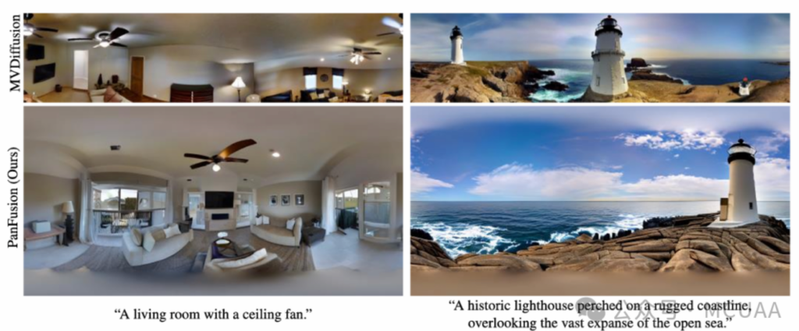
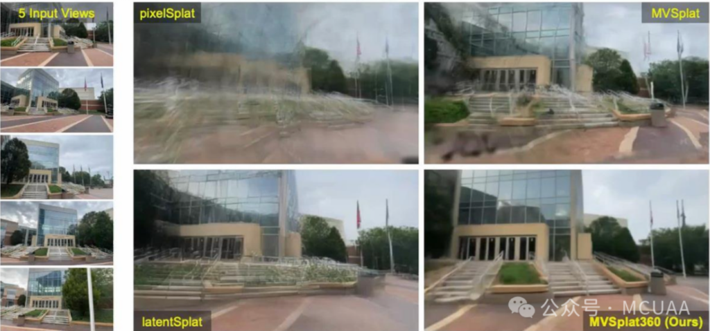

11月22日晚上，墨尔本中国高校校友会联盟（MCUAA）荣幸邀请到 IEEE Fellow、Monash 大学数据科学与人工智能系蔡剑飞教授为校友们带来题为 “从大语言模型到智能体人工智能:基础与应用”的前沿学术讲座。蔡教授长期从事计算机视觉、多模态学习与生成式人工智能研究，近年来重点聚焦于高效大模型、世界模型（World Models）及智能体AI（Agentic AI）等方向。本次报告内容深入浅出、理论结合实践，为听众系统梳理了人工智能从“工具”走向“智能体”的发展脉络，并分享了其团队在高效AI方面的一系列代表性成果。
活动开场，MCUAA 主席范志良博士对主讲嘉宾蔡剑飞教授作了简要介绍。蔡教授长期活跃于国际计算机视觉与人工智能领域，曾或正在担任 TPAMI、IJCV、IEEE T-IP、T-MM 及 T-CSVT 等多本国际顶级期刊的副主编，并在 CVPR、ICCV、ECCV、ACM Multimedia、ICLR、IJCAI 等国际重要学术会议中担任领域主席等重要职务。同时，他还曾出任 IEEE CAS VSPC-TC 主席（2016–2018）、IEEE ICME 2012 程序委员会主主席，以及 IEEE T-MM 2019 与 2020 最佳论文奖委员会主席/联合主席，并担任 ACM Multimedia 2024 总主席。蔡教授曾担任Monash大学数据科学与人工智能系的首任系主任、南洋理工大学（NTU）视觉与交互计算部门主任以及通信与网络部门主任。
蔡教授首先系统回顾了人工智能的发展历程：自 1956 年达特茅斯会议正式提出“人工智能”概念以来，经历了专家系统兴起、深度学习浪潮，再到 2012 年 AlexNet 引发的深度学习革命，以及 2022 年 ChatGPT 推动生成式 AI 进入大众视野。所谓 Agentic AI（智能体 AI），是指具备感知、推理、规划与执行能力的人工智能系统，能够在复杂环境中自主设定目标并采取行动，逐步逼近“通用人工智能（AGI）”的愿景。与仅侧重内容生成的传统大模型不同，Agentic AI 更强调“闭环智能”，即通过环境感知、工具调用、任务规划与持续反馈优化，实现真正的自主决策能力。
在介绍前沿趋势的同时，蔡教授特别指出:当前主流大模型所带来的高训练成本与高算力消耗，已成为制约其大规模应用落地的重要瓶颈，因此“高效 AI（Efficient AI）”正逐步成为研究热点。蔡教授团队的大量研究工作主要围绕“如何在有限资源条件下构建高性能 AI 系统”这一核心问题展开。报告中，他重点介绍了近年来团队在高效学习与系统优化方面具有代表性的多项研究成果：
参数高效微调（PEFT）的新机制: 传统“全量微调”需要调整模型中的全部参数，代价高昂且易过拟合。为此，学界提出了PEFT（参数高效微调），仅对模型中少量参数进行训练。蔡教授团队进一步提出：并非所有参数对任务的贡献相同，应对“更敏感的参数”优先分配训练资源。于是，该团队提出 Sensitivity-Aware PEFT 方法，通过评估参数对模型性能的敏感度，自适应选择需微调的参数子集，大幅提升了微调效率，同时保持甚至超越全参数微调性能。
可拼接神经网络: 在现实部署中，不同算力平台对模型规模需求各异，而传统模型只能“固定结构、固定复杂度”。为此，蔡教授团队提出 Stitchable Neural Networks（可拼接网络）：
将多个预训练模型视为“模块（anchors）”，允许在不同层级动态拼接，构建在同一运行时支持多个“精度-速度”配置的统一模型，从而实现模型在端云多场景中的灵活部署。
这一方法打破了“一个模型只能对应一种复杂度”的范式，为智能终端和边缘计算提供了新的解决方案。
扩散模型加速新范式: 扩散模型虽可生成高质量图像，但往往需要数百步推理，效率低下。蔡教授团队提出 T-Stitch（Trajectory Stitching） 方法：在采样过程中使用大小不同的扩散模型处理不同阶段，从而在保证生成质量的前提下大幅减少计算量。实验显示，T-Stitch可结合 LCMS 等少步采样模型，在几步内完成高质量生成，为扩散模型的实时化应用（如视频、XR）提供关键突破。
三维与全景生成——从PanFusion到MVSplat360：
PanFusion:针对传统扩散模型难以生成一致360°全景图像的问题，蔡教授团队提出“双分支结”，通过透视图与全景图联合推理，实现几何一致、布局合理的全景生成。

MVSplat360: 在3D重建领域，团队将3D Gaussian Splatting与视频扩散模型融合，构建首个可从稀疏视角生成360°场景的前馈式模型，实现真实世界场景的可泛化重建与新视角生成。

面向长视频与物理规则的视频智能:
DrVideo: 面向超长视频理解，引入文档检索机制，使模型具备“边查资料边理解视频”的能力，为长视频理解提供了高效、可扩展的框架，具有广泛应用潜力，如电影分析、监控事件检测等。
VLIPP: 针对视频生成中“违背物理常识”的问题，如物体悬空、液体反重力等，VLIPP 引入基于视觉-语言模型的物理先验，将2D运动框作为粗粒度物理引导，使视频生成更加符合真实物理规律。
最后，蔡教授展望了Agentic AI的未来方向：
– 可信赖AI（Trustworthy AI）：解决幻觉、鲁棒性、安全性、偏好对齐等问题。
– 统一基础模型（Unified foundations）：将LLM/VLM与世界模型结合，构建更强大的AI基础。
– 智能体AI++（Agentic AI++）：将智能体应用于机器人、科学和医疗保健等更复杂的现实场景。
– 多智能体智能（Multi-agent intelligence）：研究多个智能体之间的协作与博弈。
– 未来工作与技能（Future of Work and Skills）：关注如何使用AI、自我学习、批判性思维（提问与判断）以及垂直领域应用等。
蔡剑飞教授的讲座不仅系统梳理了智能体人工智能的最新发展图景，更通过其团队一系列聚焦“效率”的前沿研究成果，生动展现了未来高性能 AI 系统的可能路径。从高效参数微调方法，到可缝合的神经网络结构；从扩散模型的采样加速技术，到具备物理一致性的视频生成框架，这些研究为应对大模型时代日益凸显的成本与效率挑战，提供了重要的理论视角与技术支撑。
在 MCUAA 讲座主管刘莘理事的主持下，活动进入了互动提问环节。现场气氛热烈，听众踊跃发言，就人工智能的前沿进展、实际应用场景以及其潜在社会影响等话题，与蔡教授展开了深入交流。蔡教授对现场提出的每一个问题都耐心细致地作出解答，并结合自身科研实践，对若干热点议题进行了进一步阐释，令在场听众受益匪浅。部分来自企业界的听众亦在交流中表达了与蔡教授及其团队开展合作的期待，展现了学界与产业之间良好的互动氛围。
讲座尾声，刘莘理事代表 MCUAA 对蔡剑飞教授在百忙之中为校友们带来如此高水准的学术分享表示衷心感谢。她表示，MCUAA 将持续致力于为中国高校校友搭建高品质的学习与交流平台，汇聚智慧、链接资源，助力校友职业发展与共同成长。
文字：范志良
编辑：何云爽